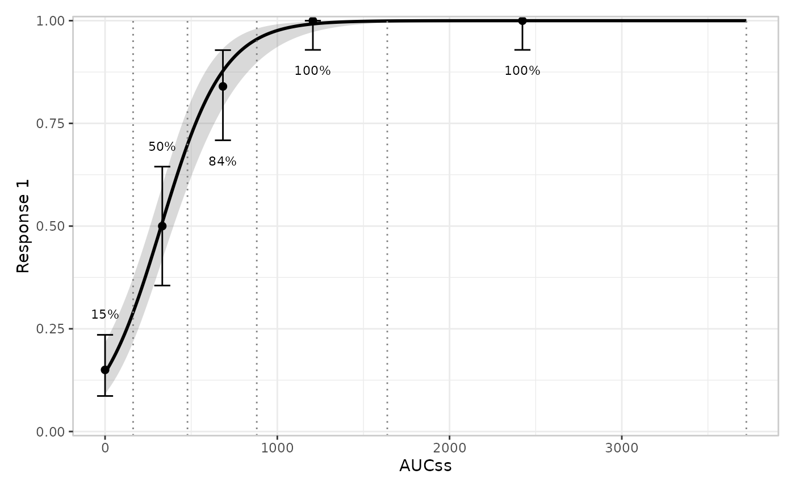
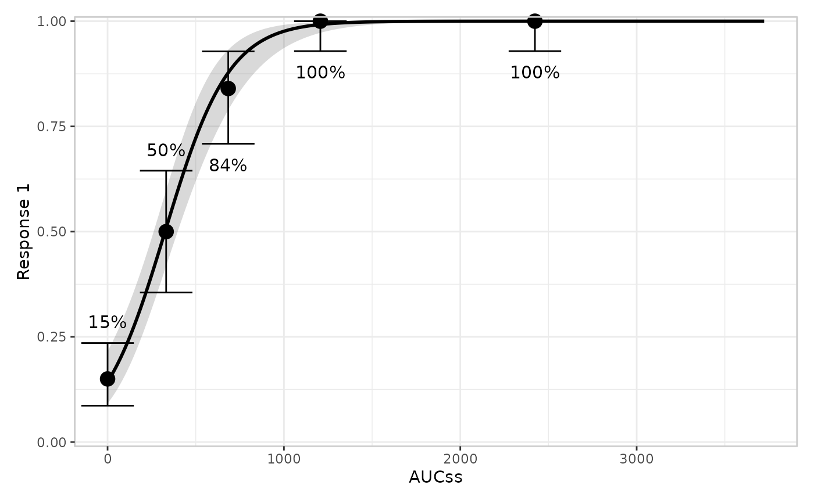
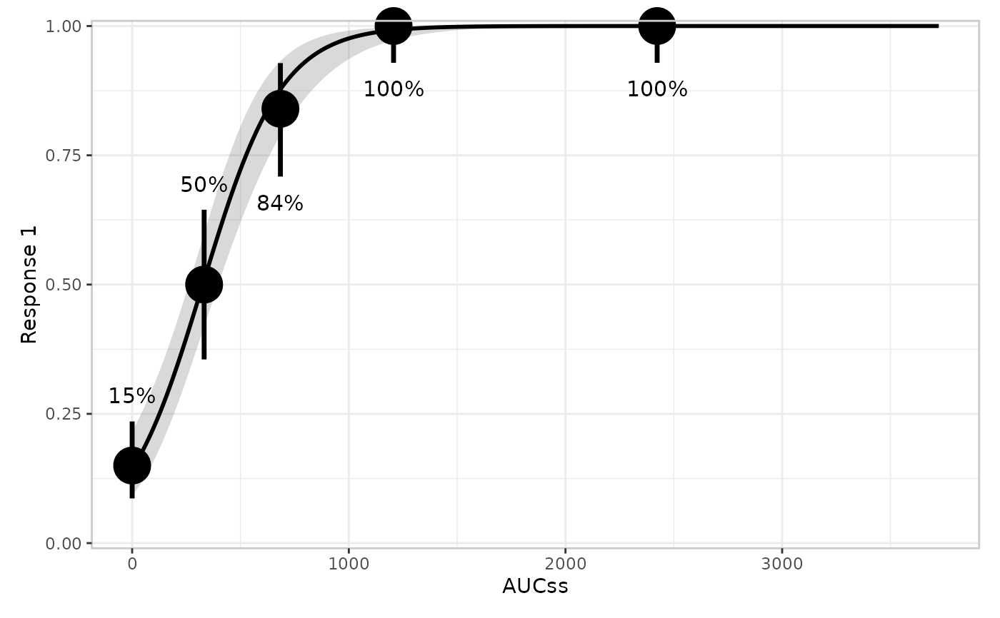
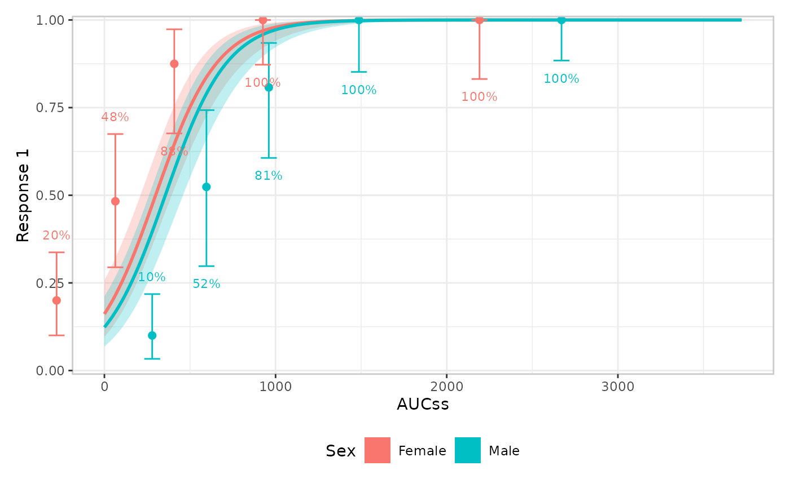
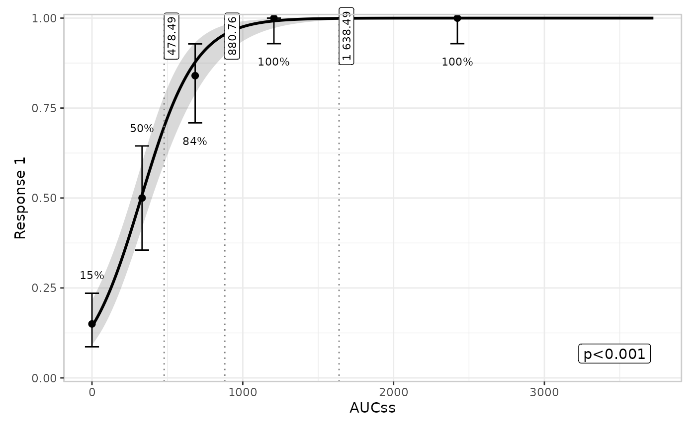

Quantile summary builders for exposure-response plots
Source:R/er-plot-style-quantile.R
er_style_quantile.RdBuilder functions for the quantile layer (er_plot_add_quantiles()),
drawing a point/interval summary per exposure quantile bin as an error bar
or a pointrange, optionally with bin-boundary vlines.
Usage
er_style_quantile_errorbar(
data,
config,
stratify,
exposure,
response,
strata,
theme,
point_size = 2,
errorbar_width = 0.025,
label_size = 3,
...
)
er_style_quantile_errorbar_vlines(
data,
config,
stratify,
exposure,
response,
strata,
theme,
point_size = 2,
errorbar_width = 0.025,
label_size = 3,
vline_colour = "grey50",
vline_linetype = "dotted",
vline_labels = FALSE,
vline_label_position = c("auto", "top", "bottom"),
vline_label_size = 3,
vline_label_colour = NULL,
vline_label_fill = NULL,
vline_label_inset = 0.05,
vline_label_digits = 0,
...
)
er_style_quantile_pointrange(
data,
config,
stratify,
exposure,
response,
strata,
theme,
label_size = 3,
pointrange_size = NULL,
pointrange_linewidth = NULL,
...
)
er_style_quantile_pointrange_vlines(
data,
config,
stratify,
exposure,
response,
strata,
theme,
label_size = 3,
pointrange_size = NULL,
pointrange_linewidth = NULL,
vline_colour = "grey50",
vline_linetype = "dotted",
vline_labels = FALSE,
vline_label_position = c("auto", "top", "bottom"),
vline_label_size = 3,
vline_label_colour = NULL,
vline_label_fill = NULL,
vline_label_inset = 0.05,
vline_label_digits = 0,
...
)Arguments
- data
The original data frame.
- config
Configuration for the specific plot.
- stratify
Logical: whether to stratify.
- exposure
Exposure variable.
- response
Response variable.
- strata
Stratification variable.
- theme
Theme components.
- point_size
Point size for
er_style_quantile_errorbar().- errorbar_width
Width of
er_style_quantile_errorbar()'s error bars.- label_size
Text size for the per-bin value label.
- ...
Additional named arguments forwarded from
er_plot_add_quantiles()'s own....- vline_colour, vline_linetype
Colour and linetype of quantile-bin boundary lines.
- vline_labels
Logical: whether the
_vlinesbuilders also label each bin boundary with its exposure value.- vline_label_position
One of
"auto","top","bottom"– vertical placement ofvline_labels.- vline_label_size, vline_label_colour, vline_label_fill
Size, text colour, and background fill for
vline_labels.- vline_label_inset
Fraction of the response range
vline_labelsare inset from the panel edge.- vline_label_digits
Number of decimal places
vline_labelsare rounded to.- pointrange_size, pointrange_linewidth
Size and linewidth for
ggplot2::geom_pointrange().
Value
A geom, or a list of geoms; see er_style().
Details
Builders for the quantile layer (er_plot_add_quantiles())
bin exposure into quantile groups and plot a response summary with an
uncertainty interval. er_style_quantile_errorbar() and
er_style_quantile_pointrange() are the base builders; their
_vlines variants add a line at every quantile-bin boundary –
including the two outer boundaries at the minimum non-placebo
exposure and the overall maximum exposure, not just the boundaries
shared between two adjacent bins – so a reader can see every bin
edge from the plot alone. All built-in quantile builders are tagged
er_style_tag(fn, layer = "quantile"), so er_plot_add_quantiles()
errors informatively if handed a builder tagged for a different
layer.
The _vlines variants can also label each boundary with its
exposure value (vline_labels = TRUE, off by default). Labels are
drawn with ggplot2::geom_label() (an opaque background, since a
label sits directly on a vline spanning the full panel height) along
either the top or bottom edge of the panel. vline_label_position = "auto" (the default) picks whichever vertical half doesn't contain
the corner a summary annotation (er_plot_add_summary()) would place
itself in – based on the same raw-data corner-crowdedness
calculation the summary layer itself uses – so the two don't
collide; this works whether or not a summary layer is actually
present, since both layers compute the same deterministic quantity
independently. Override with "top"/"bottom" to place labels
manually instead.
When stratified, all four builders horizontally dodge each quantile
bin's points/bars/labels apart by er_plot_theme()'s dodge_width
(a fraction of the exposure range, default 0.05) – a cross-layer,
stratification-wide setting controlled via er_plot_theme() rather
than a per-builder argument here, since it's about how stratification
lays out a dodged layer, not one builder's own visual style.
See er_style() for the shared builder interface these functions
implement, including how to write a custom builder of your own.
Examples
if (requireNamespace("erglm", quietly = TRUE)) {
library(erglm)
mod <- erglm_model(ae1 ~ aucss, erglm_data, family = binomial())
# er_style_quantile_errorbar(): point + error bar, the default
erglm_data |>
er_plot(aucss, ae1) |>
er_plot_add_model(mod) |>
er_plot_add_quantiles(style = er_style_quantile_errorbar) |>
plot()
# er_style_quantile_pointrange(): a pointrange instead
erglm_data |>
er_plot(aucss, ae1) |>
er_plot_add_model(mod) |>
er_plot_add_quantiles(style = er_style_quantile_pointrange) |>
plot()
# er_style_quantile_errorbar_vlines(): the default, plus dotted
# lines marking every quantile-bin boundary, including the outer
# edges at the minimum non-placebo and maximum exposure
erglm_data |>
er_plot(aucss, ae1) |>
er_plot_add_model(mod) |>
er_plot_add_quantiles(style = er_style_quantile_errorbar_vlines) |>
plot()
# Customize the quantile builder's appearance.
erglm_data |>
er_plot(aucss, ae1) |>
er_plot_add_model(mod) |>
er_plot_add_quantiles(
style = er_style_quantile_errorbar,
point_size = 4,
errorbar_width = 0.08,
label_size = 4
) |>
plot()
erglm_data |>
er_plot(aucss, ae1) |>
er_plot_add_model(mod) |>
er_plot_add_quantiles(
style = er_style_quantile_pointrange,
label_size = 4,
pointrange_size = 2,
pointrange_linewidth = 1.2
) |>
plot()
# widening the stratum-dodge spacing via er_plot_theme()
mod2 <- erglm_model(ae1 ~ aucss + sex, erglm_data, family = binomial())
erglm_data |>
er_plot(aucss, ae1, stratify_by = sex) |>
er_plot_add_model(mod2) |>
er_plot_add_quantiles(style = er_style_quantile_errorbar) |>
er_plot_theme(dodge_width = 0.15) |>
plot()
# labeling every quantile-bin boundary (including the outer edges)
# with its exposure value, placed automatically to avoid the
# summary annotation
erglm_data |>
er_plot(aucss, ae1) |>
er_plot_add_model(mod) |>
er_plot_add_summary(mod) |>
er_plot_add_quantiles(style = er_style_quantile_errorbar_vlines, vline_labels = TRUE) |>
plot()
}




